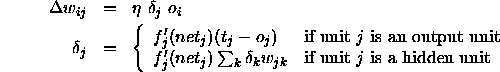

The standard backpropagation learning algorithm introduced
by [RM86] and described already in section  is
implemented in SNNS. It is the most common learning algorithm. Its
definition reads as follows:
is
implemented in SNNS. It is the most common learning algorithm. Its
definition reads as follows:

This algorithm is also called online backpropagation because it updates the weights after every training pattern.